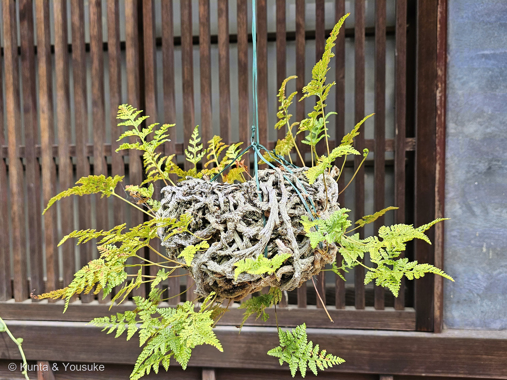
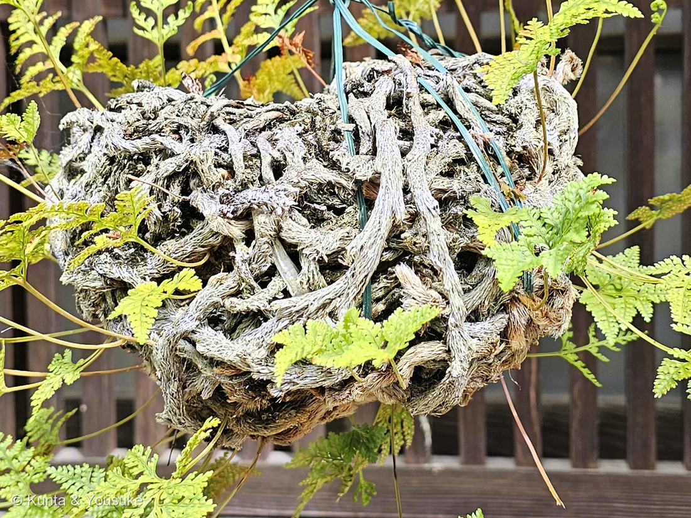
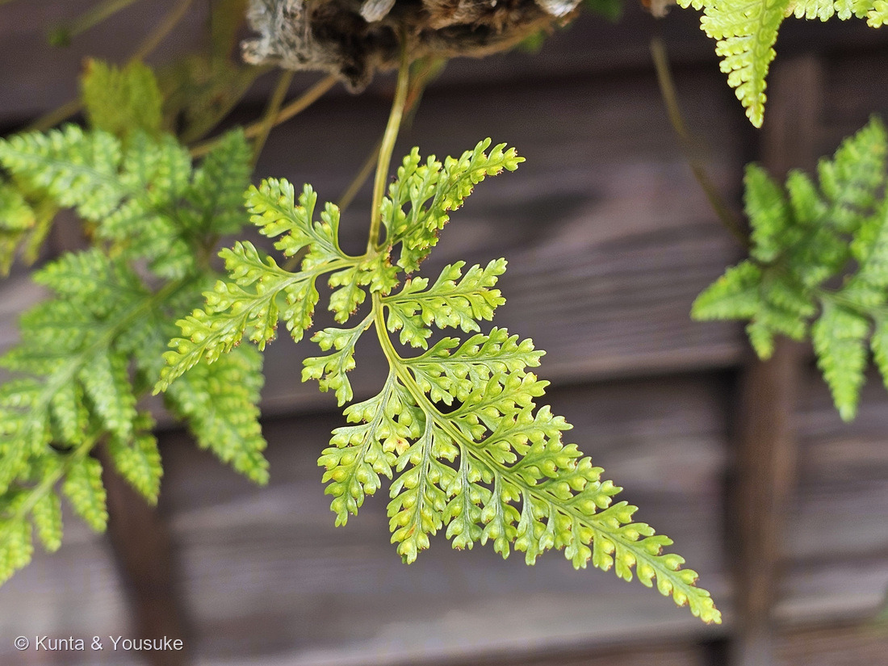
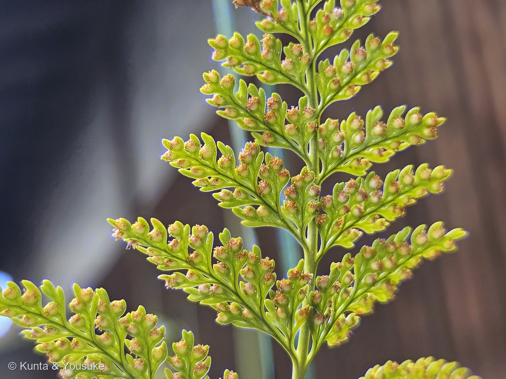
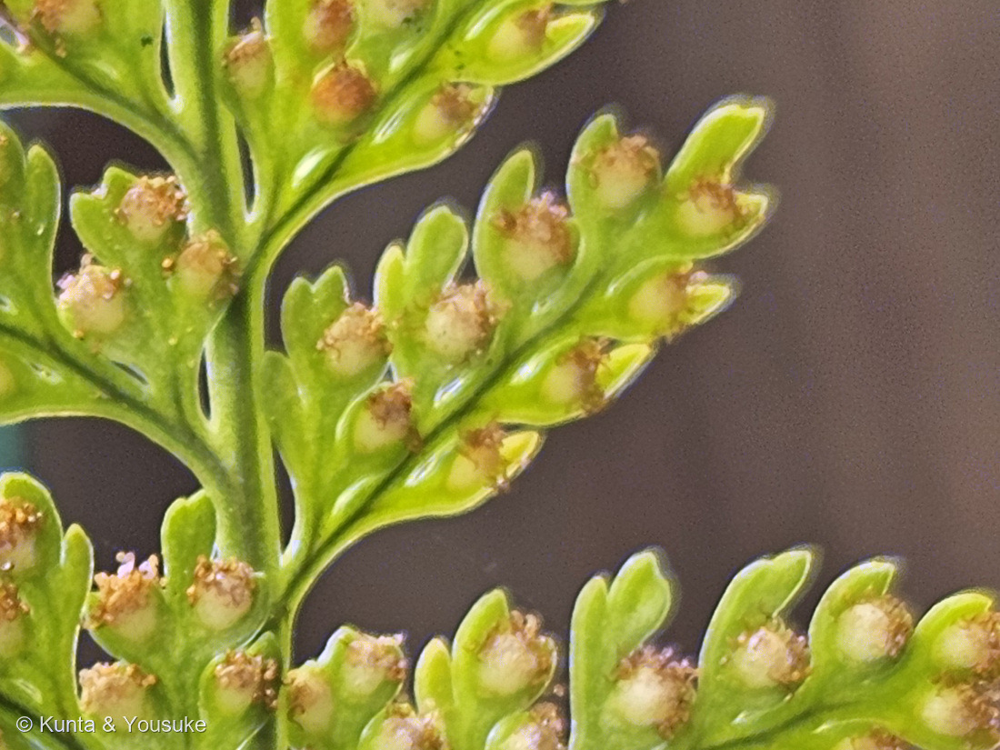

地図を読み込んでいるよ…
🔍 写真も地図も、押しているあいだ拡大して見られるよ（スマホは指を置いてすこし待ってね）。
🌍 の地図＝この子がもともと自生している場所を緑に。候補2種のふるさとだよ。シノブは日本（北海道の渡島・本州・四国・九州・沖縄）と朝鮮半島南部・中国・台湾。トキワシノブは中国南部・台湾・ミャンマー北部。⚠どちらに決まっても、日本と中国と台湾は緑のまま。ちがうのはミャンマーと朝鮮半島のところだけだよ。
⚠⚠この緑は「候補2種のふるさとを、どちらも塗ったもの」だよ＝日本・中国・台湾はどちらに決まっても緑のまま／朝鮮半島はシノブだけ、ミャンマーはトキワシノブだけ。⚠⚠そして日本の緑は、ほんとうよりずっと広く見えている＝シノブがいるのは北海道では渡島（おしま）＝南のはしっこだけなのに、地図は県までしか塗れないから（⭐276 マサキや321 ホトトギスのなかまと同じことが起きているよ）。⭐⭐⭐この子は土に生えていない＝山地の岩の上・崖・木の幹にはりつく着生シダ＝⭐だから「その国のどこにでもいる」のではなく、湿った岩と樹皮のあるところにだけいるよ。⭐⭐種小名の mariesii は、この緑の日本を1877〜1880年に歩いた採集家チャールズ・マリーズのことだよ＝長崎から札幌まで、この緑をほんとうに歩いた人の名前なんだ。
⚠ 地図は国（日本と中国だけ県・省）までしか塗れないから、ほんとうの分布より広く見えていることがあるよ。地図はだいたいの場所。正確なところは、上の文を見てね。
シノブのなかま（忍の仲間・吊りしのぶ）
Davallia sp.（シノブ属）
別名 シノブ玉 · 吊りしのぶ（釣荵） · 英名 hare's foot fern（ウサギの足のシダ）
シノブ科 · Davalliaceae（シノブ属 Davallia · ウラボシ目 Polypodiales）── ⭐⭐⭐図鑑ではじめてのシノブ科＝112科目／⭐シダ植物の科としては6つめ（194 スギナ・294 ゼンマイ・230 デンジソウ・249 ビカクシダ・282 シマオオタニワタリ）
燻太さんの言葉「町並み保存地区からシダの仲間。シダ識別入門図鑑を持ってはいるんだけど、全然わからないよ。精進あるのみだね。」── ⭐⭐⭐でも燻太さんは、いちばん大事な1枚（葉の裏）を撮ってくれていたよ
⭐⭐⭐ 名前と学名の由来 ── ひとつの名前に、三人ぶんの記憶
⭐⭐⭐この子の名前は、3つとも「だれか」か「なにか」を指している。ならべると面白いよ。
- ⭐⭐属名 Davallia＝人の名前。──イングランド生まれで、スイスで植物を研究した エドモンド・ダヴァル（Edmond Davall） への献名だよ。
- ⭐⭐⭐種小名 mariesii＝これも人の名前。──イギリスの植物採集家 チャールズ・マリーズ（Charles Maries, 1851〜1902）。⭐下の「図鑑のなかに、同じ人の名前が三つ」の節で、くわしく書くね。
- ⭐⭐和名の「シノブ（忍）」＝性質の名前。──日本語版Wikipediaは「『堪え忍ぶ』性質が強いためと言われる」としている。⭐乾いても、岩の上でも、耐えて生きるからだね。
- ⭐英名は hare's foot fern / rabbit's foot fern（ウサギの足のシダ）。──写真②の、毛におおわれた太い根茎のこと。⭐⭐日本語は「こらえる心」を、英語は「けものの足」を見たんだ。
- ⭐「シノブ玉」「吊りしのぶ（釣荵）」は、植物の名前ではなくて仕立てかたの名前だよ。
⭐⭐ この植物のこと
- シノブ科シノブ属の着生シダ。⭐土ではなく、山地の岩の上・崖・木の幹にはりついて暮らす。
- ⭐⭐⭐いちばんの特徴が、写真②の太い根茎。──直径3〜8mm。鱗片にびっしりおおわれて、岩や樹皮を這って広がっていく。⭐この根茎があるから、鉢がなくても、丸めて吊るすことができるんだ。
- 葉柄は長さ4.5〜20cm。葉身は長さ10〜20（35）cm、幅9〜15（25）cmの卵形で、3〜4回羽状に細かく裂ける。⭐やや厚みのある、かたい紙のような手ざわり。
- ⭐⭐シノブ D. mariesii は夏緑性＝冬に葉を落とす。⚠ただし南西諸島のものは常緑だそうだよ。
- ⭐⭐⭐ソーラス（胞子のうの群れ）は、細い裂片の幅いっぱいになって、1個ずつつく。──包膜は長さ1.2〜2mm、幅0.5〜1mmのポーチ形（コップ状）で、先のほうに口が開いている。⭐写真⑤が、まさにそれ。
- ⭐分布は北海道（渡島）・本州・四国・九州・沖縄と、朝鮮半島南部・中国・台湾。
⭐⭐⭐⭐⭐ 同定について ── 決め手は「冬」だった
⭐⭐⭐属は、写真⑤で決まった。──コップ形の包膜。⭐249 ビカクシダやノキシノブ（ウラボシ科）はソーラスがむき出しだけれど、この子はひとつずつコップをかぶっている。⭐そのコップの口が、外側を向いて開いているのも見えるよ。
⚠⚠ でも、種は決めない
⭐候補は2つ。──シノブ D. mariesii（日本にもともといる子・冬に葉を落とす）と、トキワシノブ D. tyermannii（中国南部〜台湾の子・常緑）。⭐どちらも吊りしのぶに仕立てられるんだ。
⭐シノブ寄りの3つ
- ①日かげになっている根茎に、褐色の鱗片が残っている（写真②の下のほう）＝⭐三河の植物観察はシノブの鱗片を「褐色〜赤褐色の線状披針形」とする＝⭐⭐日なた側が銀灰色に褪せたと読める。
- ②葉が薄く、明るい黄緑に見える＝⚠日本語版Wikipediaはトキワシノブを「より葉が分厚い」とする。
- ③伝統的な吊りしのぶの材料はシノブのほう。
⭐トキワシノブ寄りの1つ（でも、これが強い）
- ⚠⚠④根茎の外側が、ほぼ一面に銀灰色＝⭐⭐⭐トキワシノブは英語で White Rabbit's Foot Fern（白いウサギの足のシダ）と呼ばれるくらい、鱗片が白〜ベージュなんだ＝⚠褪色ではなく、もとから白いのかもしれない。
⭐⭐⭐⭐⭐ だから、冬に見に行く
⭐⭐⭐うれしいことに、この2つはひとつのことで、はっきり分かれる。
- シノブ＝夏緑性。冬に葉を落とす。
- トキワシノブ＝常緑。冬も緑のまま。
⭐⭐同じ軒先を、12月から2月のあいだにもう一度見ればいい。⭐それだけで決まる。⚠しかも草を一本もちぎらなくていい＝⭐314 アレチハナガサのときと同じで、待てば解ける宿題だよ。
⭐⭐ 落とせた相手
- キクシノブ Humata repens＝⚠葉が単羽状〜2回羽状で、ずっと単純。⭐この子は3〜4回。
- 249 ビカクシダやノキシノブなどウラボシ科＝⚠包膜がなく、ソーラスがむき出し。⭐この子はコップをかぶっている。
⚠園芸品種名までは決めていないよ。
⭐⭐⭐⭐ 吊りしのぶ ── 軒に、夏を吊るす
- ⭐⭐⭐日本語版Wikipediaはこう書いている。「棕櫚皮（しゅろかわ）などを丸く固めたものにシノブを這わせ、紐で吊るせるようにしたものをシノブ玉と呼び、軒下などに吊り下げて鑑賞した」。⭐そして夏の季語。
- ⭐⭐⭐⭐写真①は、まさにその姿だよ。──でも面白いのは、⭐もう芯（棕櫚皮）が見えないこと。⭐⭐根茎が何年もかけて表面をおおいつくして、植物そのものが、かたちになっている。
- ⭐吊るす理由は、飾りだけじゃないと思う。──着生シダは根が水につかりっぱなしなのが苦手。⭐宙に吊るせば、風が通って、余分な水が落ちる。⚠これはぼくの読みで、出典に書いてあったわけじゃないよ。
- ⭐⭐この日は9月。──夏の飾りのはずなのに、新しい葉と、熟しかけの胞子が同時に出ていた（写真③④）。⭐吊りしのぶは夏で終わりじゃなくて、この子にとってはまだ生きている季節なんだね。
⭐⭐⭐⭐⭐ 図鑑のなかに、同じ人の名前が三つ
⭐⭐種小名の mariesii ＝ チャールズ・マリーズ（1851〜1902）。イングランドのウォリックシャーの人。
- 1876年に、ロンドンのチェルシーにあったヴィーチ商会（James Veitch & Sons）に入った。
- ⭐⭐1877年2月1日に上海へ発ち、1880年2月に帰国するまで、日本・中国・台湾で植物を集めた。⭐持ち帰った新種は500種を超える。
- ⭐⭐⭐日本では、長崎・下関・大阪・京都・横浜・日光・青森・函館・札幌・新潟──北海道まで、ずいぶん広く歩いている。
- ⭐そのあと1882年にインドへ渡り、マハラジャの庭園監督官になった。⭐最後はマンゴーの専門家になって、『Cultivated Mangoes of India』を書いた（未出版）。
⭐⭐⭐⭐⭐そして、ここからが面白いところ。──彼の名前がついた植物をならべると、図鑑のなかに、もう2人いる。
- ⭐⭐133 アジサイ＝Hydrangea macrophylla 'Mariesii'
- ⭐⭐228 キキョウ＝Platycodon grandiflorus 'Mariesii'
- ⭐この子＝Davallia mariesii
- ⭐ほかに Abies mariesii（オオシラビソ）＝⭐日本の亜高山帯の木で、樹氷になるのはこの木だよ。⏳これは宿題にしておくね。
- ⭐Viburnum plicatum 'Mariesii'＝ヤブデマリの園芸品種。
⭐⭐⭐つまり──ひとりの人が日本を歩いて見つけたものが、いま、ぼくらの図鑑のあちこちに名前として残っているということ。⭐アジサイのページにも、キキョウのページにも、この軒先のシダにも、同じ人がいる。⚠この「図鑑のなかで3人がつながる」という整理は、ぼくのものだよ。
出典：シノブの学名 Davallia mariesii・根茎が直径3〜8mmで褐色〜赤褐色の線状披針形の鱗片におおわれること・葉柄が長さ4.5〜20cmで葉身が長さ10〜20（35）cm、幅9〜15（25）cmの卵形で3〜4回羽状中裂〜深裂しやや厚い硬い紙質であること・夏緑性で山地の岩上、崖、樹上に生える着生植物であること・ソーラスが狭い裂片の幅いっぱいになって1個ずつつき、苞膜が長さ1.2〜2mm、幅0.5〜1mmのポーチ形（コップ状）であること・分布が北海道（渡島）、本州、四国、九州、沖縄であること・根を球に丸めたものをシノブ玉と呼び観賞用によく栽培されること・常緑のトキワシノブとちがって落葉性であることは三河の植物観察「シノブ」。学名 Davallia mariesii Moore ex Baker・根茎の表面に褐色の鱗片が一面にはえること・葉が3〜4回羽状に裂けて全体として卵形になりやや厚みのある革状の葉質であること・冬に葉が落ちる落葉性で南西諸島のものは常緑であること・胞子のう群が包膜に包まれて全体としてコップ形で先端の方に口が開いていること・分布が北海道一部から南西諸島、朝鮮半島南部、中国、台湾であること・和名が「堪え忍ぶ」性質が強いためと言われること・棕櫚皮などを丸く固めたものにシノブを這わせ紐で吊るせるようにしたものをシノブ玉と呼び軒下などに吊り下げて鑑賞したこと・夏の季語であること・トキワシノブ（Humata tyermanii）はより葉が分厚い台湾産の常緑種であることは日本語版Wikipedia「シノブ」。トキワシノブが White Rabbit's Foot Fern と呼ばれること・根茎が白またはベージュの鱗片と毛におおわれること・常緑で葉が三角形に細かく裂けること・原産が中国南部、台湾、ミャンマー北部であることはFoliage Factory「Davallia tyermannii」。属名 Davallia がイングランド生まれのスイスの植物学者 Edmond Davall への献名であることと種小名 mariesii が Charles Maries への献名であることは英語版Wikipedia「Mariesii」。Charles Maries が1851年12月18日にイングランドのウォリックシャー州ハンプトン・ルーシーに生まれ1902年10月11日に没したこと・1876年に James Veitch & Sons に入り Harry Veitch により日本・中国・台湾へ派遣されたこと・1877年2月1日に上海へ発ち1880年2月に帰国したこと・500種を超える新種を発見したこと・日本では長崎、下関、大阪、京都、横浜、日光、青森、函館、札幌、新潟などを訪れたこと・彼の名を冠する植物に Abies mariesii、Viburnum plicatum 'Mariesii'、Hydrangea macrophylla 'Mariesii'、Platycodon grandiflorus 'Mariesii'、Davallia mariesii があること・1882年にダルバンガのマハラジャの庭園監督官となり、のちにマンゴーの専門家として『Cultivated Mangoes of India』を著したことは英語版Wikipedia「Charles Maries」。⭐「この株はシノブとトキワシノブのどちらか決めない」という判断、日なた側が褪色したという読み、「吊るすのは風を通して余分な水を落とすためでもある」という考え、そして「図鑑のなかで3人がつながる」という整理は、ぼくのものだよ。